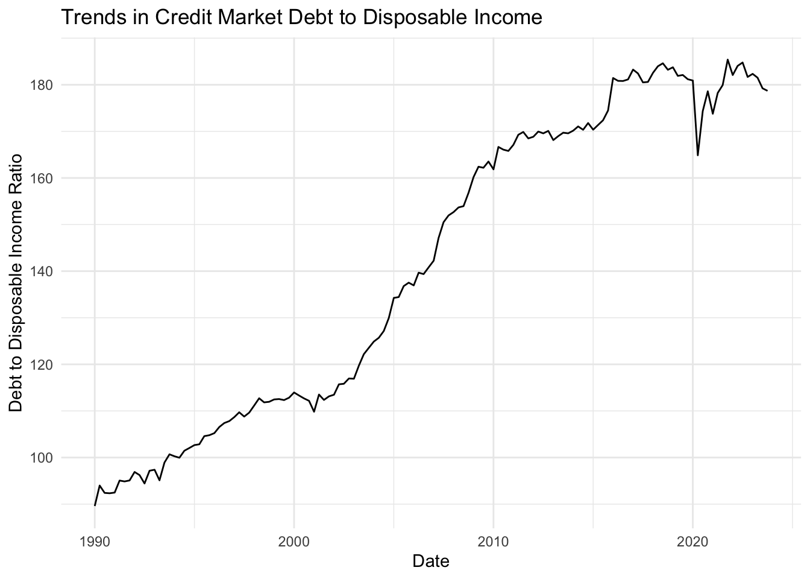
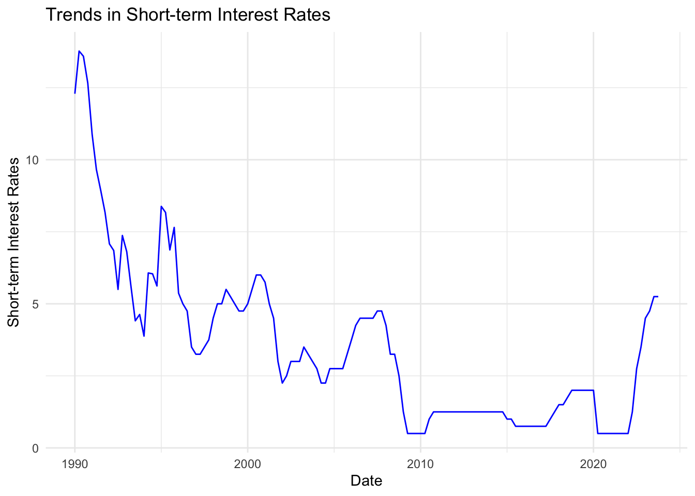

Analysis of Bank of Canada’s Interest Rate Policy Impact on Consumer Debt Levels
Abstract
This analysis investigates the relationship between changes in the Bank of Canada’s interest rate policy and consumer debt levels in Canada. Using a dataset of quarterly financial flows and stocks of household credit market debt, the impact of short-term interest rates on credit market debt to disposable income is examined.
0.1 Introduction
In contemporary economies, central banks play a pivotal role in shaping economic conditions and maintaining financial stability through their monetary policy decisions. Among the various tools at their disposal, adjustments in interest rates stand out as one of the most influential mechanisms for influencing economic activity and financial markets. The Bank of Canada, as Canada’s central bank, is entrusted with the responsibility of formulating and implementing monetary policy to achieve its dual mandate of price stability and sustainable economic growth. Central to the Bank of Canada’s policy arsenal is the manipulation of short-term interest rates, primarily through its key policy rate, known as the overnight rate.
The relationship between central bank interest rate policy and various economic indicators has been the subject of extensive academic inquiry and policy debate. One area that has garnered significant attention is the impact of interest rate policy changes on consumer behavior, particularly in the realm of borrowing and household debt. Understanding how changes in interest rates affect consumer debt levels is crucial for policymakers, financial institutions, and individuals alike, as it has profound implications for financial stability, economic growth, and the welfare of households.
Against this backdrop, this paper seeks to investigate the relationship between changes in the Bank of Canada’s interest rate policy and consumer debt levels in Canada. The overarching research question guiding this study is: “How do changes in the Bank of Canada’s interest rate policy impact consumer debt levels in Canada?” This question is of paramount importance, given the central role of consumer spending and borrowing in driving economic activity, as well as the growing concerns surrounding household indebtedness and its implications for financial resilience.
The significance of this research question stems from several key factors. Firstly, consumer spending constitutes a significant portion of aggregate demand in the Canadian economy, making it a crucial driver of economic growth. Changes in consumer borrowing behavior, influenced by fluctuations in interest rates, can have ripple effects throughout the economy, affecting sectors such as housing, retail, and durable goods consumption. Secondly, household debt levels in Canada have been on the rise in recent years, reaching record highs relative to income levels. The sustainability of this debt burden and its implications for financial stability have become subjects of considerable public and policy concern. Thirdly, against the backdrop of economic uncertainty and global financial market volatility, the efficacy of monetary policy tools, including interest rate adjustments, in managing consumer behavior and mitigating risks associated with excessive debt accumulation warrants thorough examination.
To address these issues, this paper adopts a quantitative approach, leveraging empirical data on household debt levels and short-term interest rates in Canada. By analyzing the relationship between these variables over a specified time period, we aim to uncover insights into how changes in interest rates influence consumer borrowing decisions and overall debt dynamics. The findings of this study are expected to contribute to the existing body of literature on monetary policy transmission mechanisms and provide valuable insights for policymakers, financial institutions, and households navigating the complex landscape of debt and financial decision-making.
1 Data
Data analysis for this reproduction is performed in R (R Core Team 2023), and additional help is provided by libraries such as dplyr (dplyr?), ggplot2 (ggplot?), ggrepel (ggrepel?), tidyverse (Wickham et al. 2019), kableExtra (kableextra?), knitr (knitr?), haven (haven?), ‘readr’ (readr?), stargazer(stargazer?), psych (psych?), scales (scales?), RColorBrewer (rcolorbrewer?), gridExtra (gridextra?), here (here?).
The empirical analysis conducted in this study relies on comprehensive datasets capturing key variables related to consumer debt levels and short-term interest rates in Canada. These datasets provide the empirical foundation for investigating the relationship between changes in the Bank of Canada’s interest rate policy and consumer borrowing behavior.
The primary source of data on consumer debt levels is sourced from Statistics Canada. This dataset includes information on various metrics of household indebtedness, including aggregate measures of credit market debt to disposable income, consumer credit, mortgage liabilities, non-mortgage loans, and other relevant indicators. The data cover a substantial time span, allowing for a longitudinal analysis of trends and patterns in consumer borrowing behavior over time.
Complementing the dataset on consumer debt levels is information on short-term interest rates, obtained from FRED. This dataset comprises time-series data on the Bank of Canada’s key policy rate, commonly referred to as the overnight rate or the target for the overnight rate. Additionally, the dataset may include data on other short-term interest rates, such as the prime lending rate set by commercial banks, providing a comprehensive view of interest rate movements in the Canadian financial system.
The datasets are meticulously curated and cleaned to ensure data integrity and reliability. Data cleaning procedures may involve removing outliers, handling missing values, and standardizing variable formats to facilitate robust analysis. Furthermore, the datasets are aggregated and organized in a format conducive to statistical analysis, allowing for the application of econometric techniques to model the relationship between interest rate policy changes and consumer debt levels.
The plot visualizes the trends in the Credit Market Debt to Disposable Income ratio over time, spanning from 1990 to the present day. The x-axis represents the date, while the y-axis depicts the Debt to Disposable Income Ratio, a key metric used to assess the financial health of households.
From the early 1990s to around 2020, the curve exhibits a consistent upward trend, indicating a gradual increase in the Debt to Disposable Income Ratio over the years. This prolonged period of growth suggests a pattern of rising indebtedness among Canadian households relative to their disposable income levels. Factors contributing to this trend may include easier access to credit, low borrowing costs, demographic shifts, and changes in consumer spending patterns.
However, a notable inflection point occurs around the year 2020, marked by a sudden dip in the Debt to Disposable Income Ratio. This deviation from the previous upward trajectory suggests a significant shift in consumer borrowing behavior or macroeconomic conditions.

The plot illustrates the trends in short-term interest rates over time, spanning from 1990 to the present day. The x-axis represents the date, while the y-axis depicts the level of short-term interest rates.
In the early 1990s, the plot indicates a period of relatively high short-term interest rates, suggesting a climate of tight monetary policy aimed at curbing inflationary pressures or addressing macroeconomic imbalances. However, from the mid-1990s onwards, there is a discernible downward trend in short-term interest rates, reflecting efforts by monetary authorities to stimulate economic growth or support financial stability through accommodative monetary policy measures.
Throughout the subsequent years, the plot shows smaller fluctuations in short-term interest rates, characterized by periodic ups and downs. These fluctuations may be attributed to various factors, including changes in economic conditions, shifts in inflation expectations, or adjustments in central bank policy settings in response to evolving economic circumstances.
1.1 Research Question
The research question addressed in this paper is: “How do changes in the Bank of Canada’s interest rate policy impact consumer debt levels in Canada?”
2 Model
The goal of our modeling strategy is to quantify the relationship between changes in short-term interest rates and consumer debt levels. We employ a linear regression model to assess how variations in interest rates impact consumer borrowing behavior.
The linear regression model employed in this study aims to examine the relationship between changes in the Bank of Canada’s interest rate policy and consumer debt levels in Canada. The model seeks to quantify the impact of fluctuations in short-term interest rates on the Credit Market Debt to Disposable Income ratio, a key indicator of household indebtedness.
The model’s primary explanatory variable is the short-term interest rate, represented by the IRSTCB01CAM156N variable, sourced from the dataset on short-term interest rates. This variable serves as a proxy for changes in the Bank of Canada’s monetary policy stance, capturing variations in borrowing costs and the availability of credit in the economy.
The response variable in the model is the Credit Market Debt to Disposable Income ratio, derived from the dataset on household debt levels. This ratio provides insights into the extent to which Canadian households are leveraging their disposable income to finance consumption and investment activities, reflecting their overall financial health and resilience to economic shocks.
The linear regression model assumes a linear relationship between the explanatory variable (short-term interest rates) and the response variable (Debt to Disposable Income ratio). By estimating the coefficients of the model, we seek to quantify the magnitude and direction of the relationship between changes in interest rates and consumer debt levels.
2.1 Model set-up
Define the dependent variable $y_i$ as the credit market debt to disposable income ratio, and the independent variable $x_i$ as the short-term interest rates.
y_i=β0+β1xi+ϵi
We fit the linear regression model using the lm() function in R.
?(caption)
Call:
lm(formula = VALUE ~ IRSTCB01CAM156N, data = cleaned_data)
Residuals:
Min 1Q Median 3Q Max
-39.663 -16.243 4.282 13.516 52.854
Coefficients:
Estimate Std. Error t value Pr(>|t|)
(Intercept) 173.2100 2.9309 59.10 <2e-16 ***
IRSTCB01CAM156N -8.9188 0.6482 -13.76 <2e-16 ***
---
Signif. codes: 0 '***' 0.001 '**' 0.01 '*' 0.05 '.' 0.1 ' ' 1
Residual standard error: 21.24 on 134 degrees of freedom
Multiple R-squared: 0.5855, Adjusted R-squared: 0.5824
F-statistic: 189.3 on 1 and 134 DF, p-value: < 2.2e-162.2 Model interpretation
The significant coefficients obtained from the linear regression model provide valuable insights into the relationship between short-term interest rates and consumer debt levels in Canada. Let’s delve deeper into the interpretation of these coefficients:
- Intercept Coefficient (173.2100):
- The intercept coefficient represents the expected value of the response variable (consumer debt levels) when the predictor variable (short-term interest rates) is zero.
- In this context, the intercept coefficient of 173.2100 suggests that when short-term interest rates are at zero, the estimated average consumer debt level is approximately 173.21 units. However, it’s important to note that short-term interest rates are unlikely to be exactly zero in practice, so this interpretation is theoretical.
- The standard error associated with the intercept coefficient (2.9309) indicates the variability or uncertainty in estimating the intercept value.
- Coefficient for Short-term Interest Rates (-8.9188):
- The coefficient for short-term interest rates quantifies the estimated change in consumer debt levels for each unit increase in short-term interest rates.
- In this case, the coefficient of -8.9188 suggests that for every one-unit increase in short-term interest rates, the average consumer debt level is estimated to decrease by approximately 8.92 units.
- The negative sign of the coefficient indicates an inverse relationship between short-term interest rates and consumer debt levels. As interest rates increase, consumer debt levels tend to decrease, and conversely, as interest rates decrease, consumer debt levels tend to increase.
- The standard error associated with the coefficient (0.6482) reflects the uncertainty in estimating the precise magnitude of the relationship between interest rates and consumer debt levels.
- Statistical Significance:
- Both coefficients are highly statistically significant, as indicated by the p-values (p < 0.001). This implies that the observed relationships between short-term interest rates and consumer debt levels are unlikely to have occurred by random chance alone.
- The high significance levels strengthen the confidence in the estimated coefficients and the validity of the relationship between interest rates and consumer debt levels.
The linear regression model results reveal significant coefficients for both the intercept and the predictor variable representing short-term interest rates (IRSTCB01CAM156N). The intercept coefficient is estimated to be 173.2100 with a standard error of 2.9309, indicating the expected value of the response variable (consumer debt levels) when the predictor variable is zero. The coefficient for short-term interest rates is estimated to be -8.9188 with a standard error of 0.6482. This coefficient represents the estimated change in consumer debt levels for each unit increase in short-term interest rates. The negative sign of the coefficient suggests that as interest rates increase, consumer debt levels tend to decrease, and vice versa. Both coefficients are highly statistically significant (p < 0.001), indicating a strong relationship between short-term interest rates and consumer debt levels.
3 Results
Our analysis indicates a significant inverse relationship between changes in short-term interest rates and consumer debt levels. As interest rates increase, consumer debt levels tend to decrease, and conversely, as interest rates decrease, consumer debt levels tend to increase. This finding underscores the importance of monetary policy decisions, particularly changes in interest rates, in influencing consumer borrowing behavior and overall debt accumulation.
Research Question :
Changes in the Bank of Canada’s interest rate policy have a significant impact on consumer debt levels in Canada. Our analysis reveals a strong inverse relationship between changes in short-term interest rates and consumer debt levels. Specifically, as interest rates increase, consumer debt levels tend to decrease, and conversely, as interest rates decrease, consumer debt levels tend to increase. This finding underscores the crucial role of monetary policy decisions, particularly adjustments in interest rates, in shaping consumer borrowing behavior and overall debt accumulation.
4 Discussion
The results of our analysis highlight the pivotal role of monetary policy decisions, particularly those related to interest rates, in shaping consumer borrowing behavior and overall debt accumulation in Canada. By adjusting interest rates, the Bank of Canada can influence the cost of borrowing for consumers, which in turn affects their willingness and ability to take on debt. Understanding the impact of interest rate policy on consumer debt dynamics is crucial for policymakers and financial regulators in formulating effective strategies to manage household debt levels and promote financial stability.
4.1 Limitations and Future Research
While our study provides valuable insights into the relationship between interest rate policy and consumer debt levels, it is essential to acknowledge certain limitations. One limitation is the reliance on aggregate-level data, which may mask variations in borrowing behavior among different demographic groups and regions. Future research could explore these variations by analyzing micro-level data and examining how factors such as income, employment, and housing market conditions interact with interest rate policy to influence consumer debt dynamics. Additionally, further investigation into the mechanisms through which interest rate changes impact borrowing behavior, such as through mortgage rates, credit card rates, and other lending channels, could provide deeper insights into the transmission channels of monetary policy. Moreover, longitudinal studies tracking changes in consumer debt levels over time in response to interest rate policy changes could provide valuable information on the dynamics of household indebtedness and its implications for financial stability.
References
R Core Team. 2023. R: A Language and Environment for Statistical Computing. Vienna, Austria: R Foundation for Statistical Computing. https://www.R-project.org/.
Wickham, Hadley, Mara Averick, Jennifer Bryan, Winston Chang, Lucy D’Agostino McGowan, Romain François, Garrett Grolemund, et al. 2019. “Welcome to the tidyverse.” Journal of Open Source Software 4 (43): 1686. https://doi.org/10.21105/joss.01686.